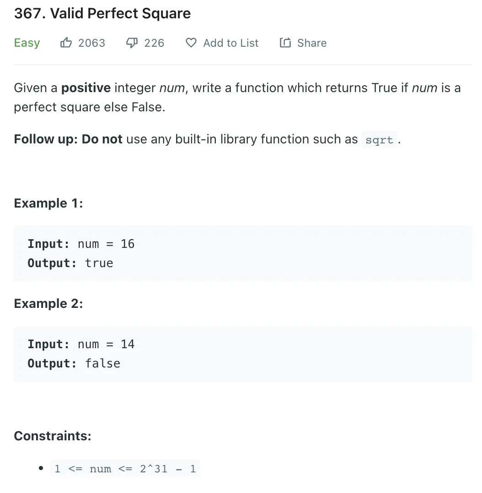

367. Valid Perfect Square
Question

✍🏽 My Solution
Runtime: 0 ms, faster than 100.00% of Java online submissions for Valid Perfect Square.
Memory Usage: 41.7 MB, less than 5.82% of Java online submissions for Valid Perfect Square.
class Solution {
public boolean isPerfectSquare(int num) {
long low = 0;
long high = num;
while (low <= high) {
long mid = low+(high-low)/2;
if (mid*mid == num) {
return true;
} else if (mid*mid < num) {
low = mid + 1;
} else {
high = mid - 1;
}
}
return false;
}
}
🧠 Thought Process
- Why did I choose this particular implementation?
- 使用 long 型別儲存運算的數字，避免溢出
- What is the time/space complexity of my solution? How do I know?
- time: O(logn)
- space: O(1)
- What mistakes did I make?
- 忘了把所有變數都改成long
- 有參考別人的解法